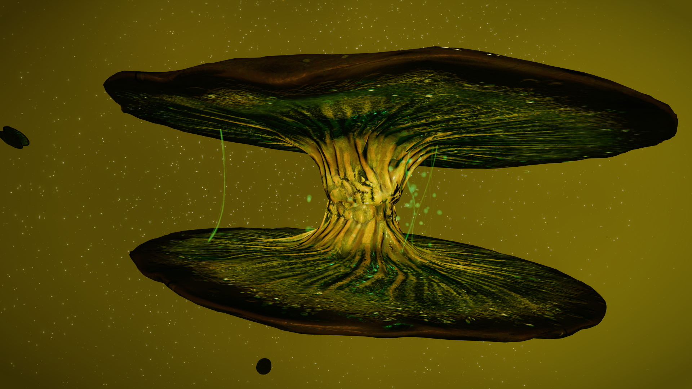

There are several varieties of Reel Molluscs to be found around the galaxy – notably in the Norma Arm. They appear inside Notable Stellar Phenomena. Look for the largest concentration of signals inside the phenomena and you should find them (if they are present).

In-game codex information shows that the different variants appear near different planet types, and have different requirements for Star Types – more can be found in the game codex.
Space lifeforms often have discoverable traits – scan them with the Composition Scanner when they are doing something to reveal the traits. For Cymatilis Reel Molluscs these are the traits:
If you have Research Limpets you can sample the Reel Molluscs and get Mollusc Spores and Mollusc Mycelium.
Images and content mostly provided by CMDR Crimshadow